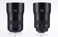

器材库 > 35mm画幅MF定焦镜头 > Milvus 135/2

详细规格
镜头类型
中远摄/远摄镜头
发布日期
2016-09-09
焦距
135mm
最大光圈
f/2
最小光圈
f/22
视角（对角）
18.7°
视角（水平）
15.6°
视角（垂直）
10.5°
镜头结构
11片/8组
最近对焦距离
80cm
最大放大倍率
1:4
滤镜口径
77mm
镜头卡口
Canon EF, Nikon F
防抖
否
颜色
黑色
尺寸
ZF.2：89.7×129.1mmZE：89.7×132.1mm
重量
ZF.2：1059gZE：1123g
该产品暂无存档的网友点评
产品图 / 样片
Milvus 135/2